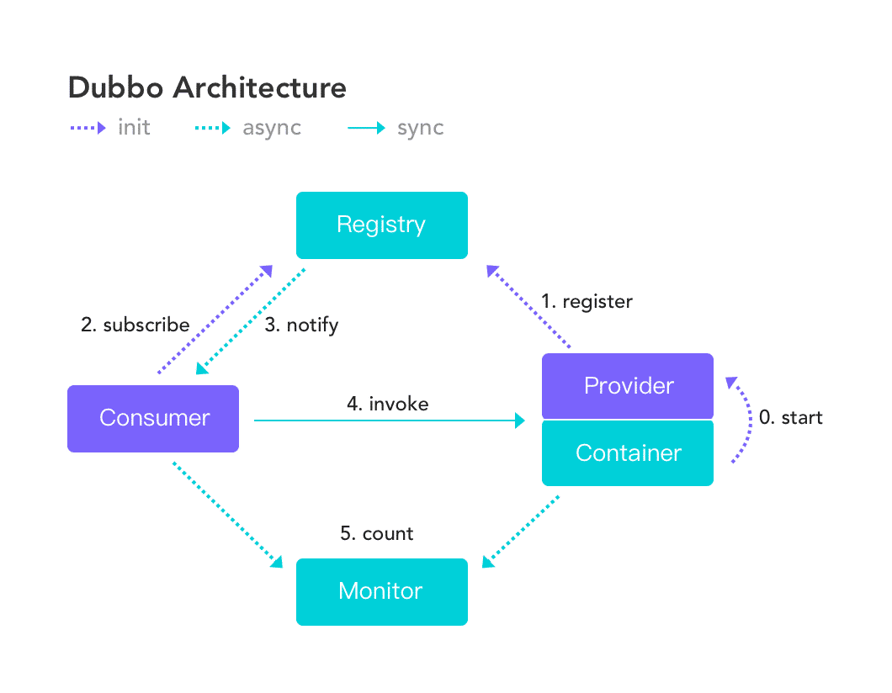
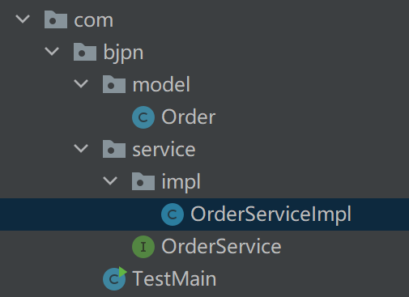

Dubbo自学笔记md版
目录
Dubbo
大连交通大学 信息学院 刘嘉宁 2021-11-12
笔记摘自 bjpwernode 秦世国
什么是Dubbo
- 高性能的 RPC 框架, 解决了分布式中的调用问题
- 不同于HTTP需要进行7步走(三次握手和四次挥手)，Dubbo采用Socket（TCP）通信机制，一步到位
- 可直接将实例化（实现 Serializable 接口）的数据以二进制流形式传输
什么是分布式
-
分布式系统是若干独立系统的集合, 但是用户使用起来像是在使用一套系统
-
解决高并发问题
应用架构的发展
- 单一架构：将所有业务放到一台服务器中
- 性能差
- 垂直应用架构：将大应用拆分成为小应用(一般按业务纬度拆分), 根据访问频率决定部署的服务器数量
- 页面更改难
- 应用间不能相互调用
- 分布式架构：将业务拆分后, 用某种（RPC（Dubbo））方式实现各个业务模块的远程调用和复用
- RPC模式（远程过程调用模式）
- 应用间客户相互调用
Dubbo的三大核心能力
- 面向接口的远程方法调用：A项目中的接口可让B项目实现（由Dubbo实现）
- 智能容错负载均衡
- 服务自动注册和发现
Dubbo的基本架构
- ==服务提供者（Provider）==：暴露服务的服务提供方，服务提供者在启动时向注册中心注册自己提供的服务。
- ==服务消费者（Consumer）==: 调用远程服务的服务消费方，在启动时向注册中心订阅自己所需的服务，从提供者地址列表中基于软负载均衡算法选一台提供者进行调用，如果调用失败再选另一台调用。
- ==注册中心（Registry）==：注册中心返回服务提供者地址列表给消费者，如果有变更将基于长连接推送变更数据给消费者
- ==监控中心（Monitor）==：监控服务消费者和提供者，在内存中累计调用次数和调用时间，定时每分钟发送一次统计数据到监控中心
协议
-
Dubbo支持多种协议：dubbo, hessian , rmi , http, webservice , thrift , memcached , redis
-
Dubbo官方推荐使用 dubbo 协议，默认端口 20880
-
在 Spring 配置文件加入
|
|
使用Dubbo
一、创建服务提供者
- 在 pom.xml 中添加依赖
|
|
- 在 pom.xml 中添加编译插件
|
|
- 创建实体类实现 Serializable 接口
-
创建接口及实现类
 -
在 实现类名-privider.xml（ spring 配置文件） 中添加
|
|
- 测试运行
|
|

二、创建服务消费者
- 创建新项目，添加依赖、插件
- 创建接口及实现类，编写组合接口的实现类，并创建 set 方法（由 Spring 容器注入）
- 在 实现类名-consume.xml （ spring 配置文件） 中添加
|
|
- 测试运行
|
|

Dubbo服务化最近实践
-
分包
- 将服务接口、服务模型、服务异常等均放在公共包中
- 将需要重复编写的接口、类等 install 在 maven 仓库中
-
粒度
- 服务接口尽可能大粒度（高内聚）
- 接口以业务场景划分，而不是某功能的某一步骤
-
版本
- 为接口定义版本号，区分同一接口的不同实现
- 可为
<dubbo:service<dubbo:reference标签指定相同 version 属性，绑定暴露的接口实现类和引用远程的 “ 接口实现类 ”
Dubbo常用标签
- 公用标签
<dubbo:application name=”服务的名称”/>配置应用信息，唯一标识服务<dubbo:registry address=”ip:port” protocol=”协议”/>配置注册中心check="false"启动时是否检查注册中心是否可用
- 服务提供者标签
<dubbo:service interface=”服务接口名” ref=”服务实现对象bean”>配置暴露的服务retries="2"自动重试次数timeout="2000"超时时间，2000毫秒内没有响应则不再重试version="1.0.0"/version="1.0.1"定义版本号，在提供相同接口的实现类时 用版本号区分
- 服务消费者标签
<dubbo:reference id=”服务引用bean的id” interface=”服务接口名”/>引用远程服务check="false"启动时是否检查注册中心是否可用retries="2"自动重试次数timeout="2000"超时时间，2000毫秒内没有响应则不再重试version="1.0.0"定义版本号，在提供相同接口的实现类时 用版本号区分
注册中心
- 服务提供者将服务的唯一标识（接口的全限定名）和基本信息（IP、端口、版本号…）登记到注册中心
- 服务消费者向注册中心查找服务的唯一标识，返回服务的清单列表，然后拿到服务的基本信息向服务提供者索要服务
- 注册中心用于将服务统一管理
注册中心的类型
-
Multicast注册中心：组播方式
-
Redis注册中心：使用Redis作为注册中心
-
Simple注册中心：就是一个dubbo服务。作为注册中心。提供查找服务的功能。
-
Zookeeper注册中心：使用Zookeeper作为注册中心【推荐使用】
Zookeeper
- Zookeeper是一个高性能的，分布式的，开放源码的分布式应用程序协调服务
Zookeeper 使用：
- 配置安装目录 conf 下的 zoo.cfg
- 在安装目录 bin 目录下启动 Zookeeper
- 为项目添加 Zookeeper 依赖
|
|
- 在项目 spring.xml 配置文件中添加, 并删除
registry="N/A"、url="dubbo://localhost:20880"
|
|
Dubbo 中 Zookeeper 的高可用
- 高可用：通常来描述一个系统经过专门的设计，从而减少不能提供服务的时间，而保持其服务的高度可用性。
- 健壮性：Dubbo 会将 Zookeeper 中服务信息存储在内存中，即使宕机也可以保证注册中心提供服务列表查询，但不能注册新服务
监控中心
- Dubbo 提供的简陋的管理控制台
- 监控服务提供者和消费者的运行状态